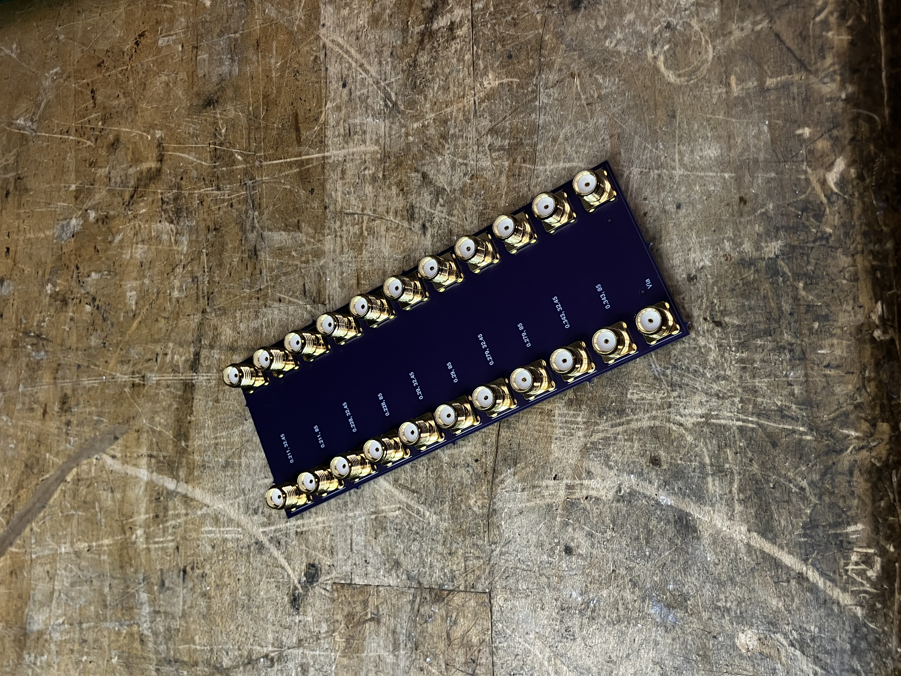
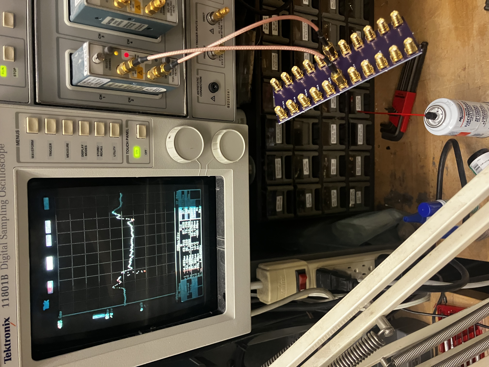

Osh Park provides some impedance calculations for their 6 layer boards, but they do not include 40 ohm characteristic impedance and they do not provide information about the propagation delay. Since KiCAD's calculator can be unreliable for complex stackups, here are some TDR measurements of various microstrips/striplines with target characteristic impedances near 40 ohms.
| Layer | Trace Width (mm) | KiCAD Calculated Impedance | Osh Park Provided Impedance | Measured Impedance | KiCAD Calculated Prop Delay (ps/cm) | Measured Prop Delay (ps/cm) |
|---|---|---|---|---|---|---|
| 1 | 0.211 | 54.0 | 50 | 50.6 | 50.57 | 55.19 |
| 1 | 0.290 | 44.9 | - | 44.5 | 51.61 | 55.19 |
| 1 | 0.343 | 40.4 | - | 38.6 | 52.16 | 53.18 |
| 5 | 0.228 | 44.4 | - | 41.4 | 63.98 | 62.80 |
| 5 | 0.279 | 39.3 | - | 38.8 | 63.98 | 60.89 |
These measurements were made on a test coupon with different trace widths on the top and inner layers. There are two traces of each width to improve the accuracy of the propagation speed measurement. One of the advantages of TDR is that it is not necessary to de-embed the microstrip or use expensive connectors.

